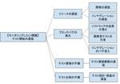
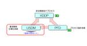
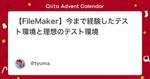

直近1週間の更新
12/25 (水)

QA/QCのための品質のモニタリングの事前設計 千里霧中
QA/QCの活動で実施する品質のモニタリングは、継続的に・繰り返し行われるため、なるべく自動化され評価の手間を少なくするのが理想です。そのためには、最初期にモニタリング設計を行い、モニタリングの仕組みを構築することが重要です。 例えばテスト実行のモニタリングならば、必要な情報（テスト実行数、テスト結果など）を自動で収集できるように、テストドキュメントのフォーマットや管理場所を最初期から整備しなければなりません。 こうしたものは、後から追加しようとしても、横断的なフォーマット変更や構成管理場所の変更が必要になり費用がかさみます。特にプロジェクトの規模が大きくなるほど、モニタリングの追加・変更コス…
31分前

テスト自動化未経験者がmablを使ってテスト自動化を始めてみた Zennの「QA」のフィード
はじめに 私は2023年10月に株式会社ビットキーにテストエンジニアとして入社しました。 入社してから半年ほどスクラムチーム内でQAとしてテスト業務（テスト分析、テスト設計、テスト実装、テスト実行）を担当した後、2024年3月からリグレッションテストの自動化および自動化したテストの実行を中心としたテスト業務を行っています。 弊社のQAチームはテスト自動化ツールとしてmablを採用しています。 mablはローコードテスト自動化ツールとなっており、コーディングに関する経験や知識を備えていない場合でもテスト自動化をはじめることができるようになっています。 私自身もコーディングに関する経験や...
2時間前
12/24 (火)

大人のソフトウェアテスト雑談会 #244【もみの木】に参加してきた 天の月
ost-zatu.connpass.com 今週もテストの街葛飾に行ってきたので、会の様子と感想を書いていこうと思います。 葛飾例大祭 テスト開発手法 おおひらさんの20代 全体を通した感想 葛飾例大祭 自分の子供がインフルエンザになってしまった関係で行けない可能性があるという話から、最悪Zoomで配信するよというやさしいコメントをかけていただきました。 テスト開発手法 VSTePに関して、にしさんから口伝で教わった際のエピソード*1を聞いたり、あれは現場では使えないとある人がぶっちゃけて言っていたという話を聞いたりしました。 その流れでテスト開発手法の話になり、HAYST法は組み込み開発の文…
10時間前
オニオンアーキテクチャの本質を理解したい Zennの「Test」のフィード
はじめに 設計を十分に検討せずに開発を進めると、後々になって痛い目を見ることがあります（自戒）。オレオレフレームワークで実装されたアプリケーションをしばらくしてから触ると、不透明なデータアクセスの経路、スコープを考慮しない変数宣言、機能の追加・削除が苦しいファイル構成…など、様々な課題が顕在化する可能性があります。このような事態を未然に防ぐために、適切なアーキテクチャの選定は重要な準備の一つです。 本記事では、オニオンアーキテクチャに基づいてGoでWeb APIを実装した経験を通して得た知見を、コード例とともに共有します。 注意 本記事では以下の点については取り扱いません。 ...
16時間前

アジャイルソフトウェアの12の原則から考える品質指標 Zennの「品質」のフィード
はじめに ソフトウェア開発を行っていくうえで、「品質」をどのように定義するかは組織によって様々かと思います。 私が所属する開発チームではアジャイルによるソフトウェア開発を行っていますが、毎スプリントごとに開発スタイルや仕事の取り組み方を改善し続けるアジャイル開発において、 大きな一つの指針になる「品質」をどのように定義するかは重要な課題の一つだと考えます。 そこで、本記事ではアジャイル開発における品質定義の指標について考えたいと思います。 具体的には、アジャイルソフトウェア開発宣言の12の基本原則をもとに、品質定義に向けた指標を洗い出していきます。 想定読者 アジャイル開発を採...
16時間前
アジャイルソフトウェアの12の原則から考える品質指標 Zennの「QA」のフィード
はじめに ソフトウェア開発を行っていくうえで、「品質」をどのように定義するかは組織によって様々かと思います。 私が所属する開発チームではアジャイルによるソフトウェア開発を行っていますが、毎スプリントごとに開発スタイルや仕事の取り組み方を改善し続けるアジャイル開発において、 大きな一つの指針になる「品質」をどのように定義するかは重要な課題の一つだと考えます。 そこで、本記事ではアジャイル開発における品質定義の指標について考えたいと思います。 具体的には、アジャイルソフトウェア開発宣言の12の基本原則をもとに、品質定義に向けた指標を洗い出していきます。 想定読者 アジャイル開発を採...
16時間前
ApidogでEnd-to-endテストを実装してみた Zennの「Test」のフィード
ApidogでEnd-to-endテストを実装してみた はじめに APIの品質担保は開発者の重要な課題の一つです。サービスを運用していると、予期せぬところでバグが発生することがあります。特にサービスのコア機能となるAPIについては、高い品質を維持する必要があります。今回は、APIのドキュメント管理とテストを同時に行えるApidogを使って、コアとなるAPIのEnd-to-endテストを実装した経験を共有したいと思います。 Apidogとは Apidogは、APIのドキュメント管理とテストを統合的に行えるツールです。主な特徴として： APIドキュメントの作成・管理機能 API...
18時間前
QualityForwardを使ってみた ソフトウェアテストタグが付けられた新着記事 - Qiita
テスト管理ツール 2024年のアドベントカレンダーを眺めているとQualityForwardというテスト管理ツールのアドベントカレンダーに目が留まりました。 https://qiita.com/ad…
21時間前
自動テストって何？必要あるの？ Zennの「Test」のフィード
! この記事はQiitaのアドカレで書いた記事の移植です。 https://qiita.com/Daichi44/items/31cf356cb34067fdda9b 概要 みなさん、自動テスト書いてますか〜？ 自動テストに縁がない人にとって、この領域へ一歩踏み出すことは中々難しいことだなぁ、と感じる今日この頃。 この記事では、「自動テストとは何か」「なぜ必要なのか」「どうやって導入するのか」「何をテストすれば良いのか」などについて、私がエンジニアになってから今までの約4年間で経験・勉強してきたことをベースに解説していきます。 この記事を読んで、自動テスト導入へ一歩踏み出せる人が増...
1日前
GASを使ってテスト管理のストレスから解放された話。 Zennの「Test」のフィード
はじめに この記事はCommune Advent Calendar 2024シリーズ1 24日目の記事です。 Commune株式会社でQAエンジニアをしています、KOYOです。 さて、QAエンジニアのみなさん、スプレッドシートでテストケースを管理していて、こんな悩みを感じたことはありませんか？ テストケースのデータ量が増えると、手動で全体進捗更新やNG判定したテストケースの確認が負担になる バグの発生ケースを特定するのに、複数のシートを移動しなければならない これらの課題を解決するために、Google Apps Script (GAS) を使って、スプレッドシート上にダッシュボー...
1日前
単体テスト(ユニットテスト)を舐めるな（WF開発） Zennの「Test」のフィード
SESで４年働いた人の感想です。 単体テストとは何か 単体テストは、開発フェーズやテストフェーズで最初に実施されるテストです。ソフトウェアの最小単位とされていますが、その「最小単位」の定義はケースによって異なるため、この理解で問題ないと考えています。なお、当記事はWF型の開発を前提としています。 具体的な手法について 機能確認テスト 各モジュールが外部設計（SW方式設計）に基づいて正しく機能しているかを確認します。 制御フローテスト 順次、分岐、繰り返しの網羅を行います。 データフローテスト データが「定義」→「使用」→「消滅」の順に正しく動いているかを確認します。 PJ...
1日前

Webサービスの歩き方 - 境界値分析 -1.0 3QA - freee Developers Hub
3QA - freee Developers Hub
Webサービス開発におけるリスクを見つけるために、Webサービスの境界であるへりを探ります。
1日前

MagicPodヘルススコアの全社統合分析用ダッシュボードを作成してみた 1Zennの「QA」のフィード
! これは MIXI DEVELOPERS Advent Calendar 2024 の24日目の記事です。 背景 株式会社MIXI（以下、MIXI）は2021年8月にMagicPodを導入し、2024年12月現在3年と4ヶ月が経過しました。 今までMagicPodの運用は各事業部に任せっきりで、全社横断的に運用状況を把握することができませんでした。 インプロセスQAとして実務を行なっていた私ですが、2024年10月より横断的にMagicPodに関する支援を行うことになったので、まずは全社把握を行うことにしました。 自動テスト評価に関して、MagicPodでできること・できない...
1日前

クリスマススペシャル『テストチャーターの作り方』 1テスターちゃん【4コマ漫画】
クリスマススペシャル『テストチャーターの作り方』 フリースタイルの探索的テストはマネジメントも実行も難しい テストチャーターを作る テストチャーターのテンプレート とはいえ「想定していない何かを発見したい」もある セッションベースドテストマネジメント クリスマススペシャル『テストチャーターの作り方』 この記事はソフトウェアテスト Advent Calendar 2024の24日目の記事です。 今回は探索的テストの時に使うテストチャーターの作り方のお話です。 フリースタイルの探索的テストはマネジメントも実行も難しい 何かバグを見つけたいから全体的に探索的テストする、ということはテストを行っている…
1日前

登壇ドリブンという考え方 1Zennの「QA」のフィード
はじめに ※この記事は「Medley（メドレー） Advent Calendar 2024」24 日目の記事です🎅🏻🎁 株式会社メドレーにて、QA エンジニアをやっている小島 (@Daishu) です！今回は職種によらない内容でブログを書いたので、ぜひ沢山の方にご覧頂けると嬉しいです🎄 今年の社外発信をふりかえる 突然ですが！2024 年に私が行った社外向けの発信について振り返ります！ 結果はこちらです↓ https://speakerdeck.com/medley/magicpod-meetup-health-score-night https://speakerdeck.co...
1日前
12/23 (月)
アジリティを高めるテストマネジメントの考え方 ソフトウェアテストタグが付けられた新着記事 - Qiita
この記事は過去の自分に教えたい、ソフトウェア品質の心得を投稿しよう by QualityForward Advent Calendar 2024 23日目 の記事です。 https://qiita.…
1日前
USDM-24. トレーサビリティ・マトリクス Kouichi Akiyama
2024年のアドカレです。 前回は「派生開発時（XDDP）には、USDMで記載した『変更要求仕様書』をつくり、変更要求は既存のソフトウエアをどう変えるか、befor/afterで表現するとよい」という話を書きました。 続きをみる
1日前
単体テストとか結合テストって結局なんなの？ Zennの「Test」のフィード
Daily codingならぬDaily blogging2日目 二日目にしていきなり体調不良になり、今日はほとんどインプットできてません😇 とりあえず読みかけの単体テストの考え方/使い方で知ったことをアウトプットしてみる 単体テストって結局なんなんでしょうか この本を読むまでは、なんとな〜く「単体テスト」っていうのは、一つのクラスとかモジュールとかメソッドに対するテストのことを指すのかなぁと思ってた。 「結合テスト」は、複数のクラスとかを組み合わせたテスト 例えばコントローラーからサービスクラスとか呼び出して〜最終的なコントローラから返るレスポンスは？みたいなやつ。 一つの振る...
1日前

【教育心理学関係読書会】次に読む本を選ぶ会！！に参加してきた 天の月
educational-psychology.connpass.com こちらのイベントに参加してきたので、会の様子と感想を書いていこうと思います。(30分くらい遅れての参加でした) 紹介されていた本 「深い学び」と教え方の科学: 認知心理学による学びの深化論 心の社会 ミンスキー博士の脳の探検 ―常識・感情・自己とは ファスト＆スロー 心と現実 私と世界をつなぐプロジェクションの認知科学 自己調整学習 主体的な学習者を育む方法と実践 学びのコミュニティづくり 影響力の武器 新装版アブダクション 新人が学ぶということ 因果推論の科学 科学的根拠（エビデンス）で子育て 教育経済学の最前線 授業を…
2日前
レビューの質を高めて、仕様の漏れや欠陥を指摘できるようになろう ソフトウェアテストタグが付けられた新着記事 - Qiita
はじめに ★ソフトウェアテストの小ネタ Advent Calendar 2024 23日目 私の所属するチームは、QAが計画段階のレビューで仕様の漏れや欠陥を指摘し、チームに貢献する割合がとても大き…
2日前

テストケースの形式性について Go!Go!Gomaznさんのフィード
テストケースの形式性 テストケースの特性である「テストケースの形式性」について記載します。 形式性という言葉はあんまり適した言葉がないのですが、しいていえば「formality」となると思います。 「この言葉を流行らしたいという」意図はありませんが、組織のテストケース改善を行う時に、この概念が必要な場合がありました。 そこで、本稿では「こういう見方もあるんだな」くらいに思ってもらえればいいと思っています。 多様なテストケース テストケースにはさまざまなフォーマットがあります。 典型的なものではISTQBのテストケースの定義があります。 「入力値」「事前条件」「期待結果」「アクショ...
2日前
テストケースの形式性について Zennの「QA」のフィード
テストケースの形式性 テストケースの特性である「テストケースの形式性」について記載します。 形式性という言葉はあんまり適した言葉がないのですが、しいていえば「formality」となると思います。 「この言葉を流行らしたいという」意図はありませんが、組織のテストケース改善を行う時に、この概念が必要な場合がありました。 そこで、本稿では「こういう見方もあるんだな」くらいに思ってもらえればいいと思っています。 多様なテストケース テストケースにはさまざまなフォーマットがあります。 典型的なものではISTQBのテストケースの定義があります。 「入力値」「事前条件」「期待結果」「アクショ...
2日前
テストケースの形式性について Zennの「Test」のフィード
テストケースの形式性 テストケースの特性である「テストケースの形式性」について記載します。 形式性という言葉はあんまり適した言葉がないのですが、しいていえば「formality」となると思います。 「この言葉を流行らしたいという」意図はありませんが、組織のテストケース改善を行う時に、この概念が必要な場合がありました。 そこで、本稿では「こういう見方もあるんだな」くらいに思ってもらえればいいと思っています。 多様なテストケース テストケースにはさまざまなフォーマットがあります。 典型的なものではISTQBのテストケースの定義があります。 「入力値」「事前条件」「期待結果」「アクショ...
2日前


QAエンジニアが挑むユーザビリティテスト：気づきと学びの記録 Zennの「QA」のフィード
こんにちは、QAエンジニアのEnnです。 Ubieでは職種にとらわれず、自分が挑戦したいことには積極的に取り組める文化があり、QA以外の業務にもチャレンジできる環境が整っています。 以前の職場でユーザーリサーチの研修講座に参加したことをきっかけに、この分野に興味を持ち続けてきました。Ubieでは、各チームがユーザーのインサイトを把握するために、定期的にユーザーインタビューとユーザービリティテストを実施しています。今回、モデレーター[1]として所属しているチームで合計4回のユーザビリティテストを実施しました。この記事では完全に素人である私が、そこから得た経験をシェアしたいと思います。 ...
2日前

スタートアップ企業でQAチームを立ち上げて半年間やってきたこと Zennの「QA」のフィード
! ※この記事は「COUNTERWORKS Advent Calendar」の23日目の記事です。 はじめに こんにちは！今回のアドベントカレンダー4記事目となるshimです。今回のアドベントカレンダーの言い出しっぺなので頑張ってます。 あらためて自己紹介なのですが、株式会社COUNTER WORKS（カウンターワークス）エンタープライズ事業部の開発チームにて、テックリード的存在として、リーシングのDXを実現するクラウド管理システム「ショップカウンター エンタープライズ」を開発しております。 今回は、弊社の弊事業部内に新たにQAチームを立ち上げ、半年間に行ったことを振り返ります。 ...
2日前

テストアーキテクチャの実践 52QA - freee Developers Hub
こんにちは。決済プロダクトでQAエンジニアをしているrenです。freee QA Advent Calendar2024の23日目です。 今回は、決済プロダクト開発にテストアーキテクチャを設計した事例について紹介します。 テストアーキテクチャとは テストアーキテクチャによって解決したい課題 テストアーキテクチャ設計のステップ 1. この振る舞いを担保するためには、どのようなテストが必要だろうか？という問いを立てる 2. 抽象化して考えるための概念を学ぶ 3. テストアーキテクチャを描き、議論する テストアーキテクチャ設計のインパクト 実装改善に関する気づき テストの構造とソフトウェアの構造に関…
2日前

過去の自分に教えたい、ソフトウェア品質の心得 Zennの「品質」のフィード
こんにちは、Naotoです！Ψ ソフトウェアの品質って、エンジニアとして避けて通れないテーマですよね。 そもそも品質って何だろう？どんな基準で「良い」「悪い」を判断しているのか？ そんな疑問を一緒に考えていきましょう。 品質とは？ 「品質」とは一言で言うと、製品やサービスがどれだけ期待や要求を満たしているかを表すものです。 この「期待」や「要求」には、ユーザーの期待、仕様、基準、そして開発者自身の価値観も含まれます。 たとえばソフトウェアの場合 ユーザー視点の品質 使いやすく、安定していて、価値を提供できるもの。 仕様視点の品質 要件通りに機能が実装されていること。 内部的な...
2日前
12/22 (日)

生成AI時代を支えるプラットフォームに参加してきた 天の月
generative-ai-conf.connpass.com こちらのイベントに参加してきたので、会の様子と感想を書いていこうと思います。 会の概要 会の様子 井崎さん(NVIDIAの講演) 久保さん(AWS Japanの講演) 菅野さん(Snowflakeの講演) 会全体を通した感想 会の概要 以下、イベントページから引用です。 今回のイベントでは、生成AIを支えるプラットフォームであるエヌビディア合同会社から井﨑 武士様、アマゾンウェブサービスジャパン合同会社から久保 隆宏様、Snowflake合同会社から菅野 翼様をお招きして、「生成AI時代を支えるプラットフォーム」をテーマにLT会を…
2日前

USDM-23. XDDPと「変更要求仕様書」 Kouichi Akiyama
2024年のアドカレです。 前回は「特定し、紐づけし追跡できるように要求と仕様にはIDを振る」という話を書きました。 続きをみる
3日前
WACATE2024冬 BPPセッションのふりかえり 杞憂
WACATE2024冬にて、BPPセッションを行ってきました。 このセッションは、前回のWACATE2024夏で受賞したBPP賞の副賞として、機会をいただいたものです。下記リンクが前回BPP賞受賞後に書いた記事です。 続きをみる
3日前
ZennのCLIを試してみた。 Zennの「Test」のフィード
注意 とてつもなく話がズレる記事です。 読むのが嫌な人はお帰りください。 挨拶 こんにちは。初登校初投稿のウェブ完理です。 ZennのGitHubデプロイを使ったCLIの投稿方法がありVSCodeのシンプル(大嘘)な画面で操作が出来て楽でした。 今のようにMarkdownをめちゃくちゃ試していきます。(本題はZennCLI) Markdown マークダウンは日々使い慣れているのでいいのですが技術系ブログは数回しか書いたことないので不安しかないです。 まあStudio Designから自作ブログにWordPressも使っている僕には余裕ですよ！(フラグ) ZennCLI 次...
3日前
アプリケーションコードの構造によってテストコードをどう書くか Zennの「Test」のフィード
! この記事はSmartHR Advent Calendar 2024 シリーズ2の22日目の記事です。 はじめに 本記事ではアプリケーションコードの構造によってどのようにテストコードを書くかを紹介します。題材として外部のWebサービスが提供するSDKに依存したアプリケーションを作る例で記載します。 アプリケーションの実装にはReactを使用してTypeScriptで記述します。 テストに使用するライブラリはVitestと@testing-library/reactです。 コードの書き方に焦点を当てますので、テスト環境の設定をどのように行うかは公式のドキュメントなどを参考にしてくだ...
3日前

【FileMaker】今まで経験したテスト環境と理想のテスト環境 1ソフトウェアテストタグが付けられた新着記事 - Qiita
悩ましいテスト環境の構築. どの言語でも悩ましいと思いますが、FileMakerでのテスト環境も「どういうふうにテスト環境を作ろうかな」と毎回悩みます。 今までの経験上、「こんなテスト環境があったな…
3日前
Playwright運用で役に立つかもしれないTipsたち Zennの「Test」のフィード
Social Databank Advent Calendar 2024 の22日目です。 こんにちは！saimyonです👶 前回の投稿からだいぶ時間が経ってしまいましたね… みなさま、PlaywrightでE2Eテスト自動化していますでしょうか？ 私も最近再び力をいれるようになり、その中でやってきたことを共有します。 Viteのホットリロードはやめる 最近弊社ではE2Eテスト専用の開発環境を立ち上げ、その中でコンテナ間通信を用いてE2Eテストを実行するようにしています。 （以前 CircleCI上でPlaywrightを実行する記事 を書いたのですが、現状はそこから変わっています...
3日前

新卒QAのすゝめ QA - freee Developers Hub
こんにちは。QAエンジニアをしているinachanです。 フリー以外のサービスと連携するプロダクトの一員としてQAをしています。 freee QA Advent Calendar2024 22日目です。 はじめに 私はfreee初の新卒QAエンジニアとして入社しました。QAの新卒として入ってきたのは私と12月10日のアドベントカレンダーを担当しているtonchanの2人です。 そして7月にフリー以外のサービスと連携するプロダクトにアサインされた新米QAです〜。 QAのことはもちろん、自分なりの発見をまとめていこうかなと思います。 なぜ最初のキャリアとしてQAを選んだのか そもそもQAエンジニア…
3日前
12/21 (土)

スクラムフェス金沢2025の打ち合わせ(3回目)に参加してきた 天の月
aki-m.hatenadiary.com スクラムフェス金沢2025に向けた準備をしてきたので、会の様子と感想を書いていこうと思います。 会場決め ランチ 会場予約 開催趣意書修正 スタッフミーティングの日程 会場決め 会場はITビジネスプラザ武蔵でいいという話があったのですが、開場が10時ということだけが懸念だという話が出ました。ただ、他にいい場所があるかという話もありますし、少し後ろ倒しするくらいなら問題ないのでは？ということで、ITビジネスプラザ武蔵になりました。 ランチ 前回ごみの回収が大変だった*1という問題があったので、ランチはそれぞれが食べにいく形がいいのではないか？という話に…
3日前

USDM-22. 要求IDと仕様ID Kouichi Akiyama
2024年のアドカレです。 前回は「カテゴリ名とは大きな要求漏れを防ために、システムの世界を機能や構成で分割して名前を付けたもの」という話を書きました。 続きをみる
3日前
BDD のすすめ Zennの「Test」のフィード
はじめに みなさん、テスト書いてますか？ テストって大変ですよね。適切なテストを適切なテストレイヤーに、実装にかかるコストと、実行にかかるコストを鑑みて、配置しないといけません。ユニットテストで実装すべき境界値テストを E2E で実装するのはおかしいのは理解できるとは思いますが、あくまで簡単な例であり、実際のところどちらで実装すべきか曖昧なテストシナリオなんてありふれています。 ここでは、ユニットテストではなく、IT (統合テスト) や E2E に足を伸ばしてみないか？ という BDD のすすめと題した記事を書かせてもらいます。本来 IT や E2E はテストの足を引っ張りがちなので...
4日前

「良いシステム像」を求めて泊まり込みのテストワークショップに参加した話 ~Day0~ Zennの「QA」のフィード
! ボリュームが大きくなりそうなので、この記事ではまだワークショップには参加しません。 次回以降でやっと参加する運びになりそうです。 自己紹介とお悩み 初投稿です。ひぐちと言います。社会人6年目になります。 社外技術やトレンド調査を行いつつ、昨年から社内システムの開発運用にアサインされています。 無我夢中でなんとか社内にシステムをリリースして一年。 自分なりに「より良いシステム」を目指してプロジェクト推進を行なってきました。 ただ、日々の業務に追われながら、頭の隅には常に 「高品質なシステムってなんだ？」 「どうなったら高品質と言えるんだ？」 というモヤモヤがありました。 「W...
4日前

コードの内部品質を高める動きをチームに浸透させたい 1Zennの「品質」のフィード
こんにちは、モバイルエンジニアのころむにーです。 普段、モバイルアプリを通じたユーザーへの価値提供を目指すプロジェクトに、技術リードという立場で参加しています。 本記事では、コードの内部品質について、私が直近のプロジェクトで取り組んできたことをまとめました。 背景 プロダクトで継続的に価値を提供していくために、コードの内部品質を高く保つのは重要です。 内部品質は目に見えにくく定量的な成果が出にくいものであるものの、中・長期的にビジネスの成長に大きく影響してきます。 https://mtx2s.hatenablog.com/entry/2023/04/26/230917 私がジョインし...
4日前

QAがスナップショットテストを書いてみた話 QA - freee Developers Hub
こんにちは、freee人事労務でQAエンジニアをしているkairiです。freee QA Advent Calendar2024 21日目です。 今回はプロジェクトの中で実際にあった、不足しているテスト（自動テスト）をQAが書いてサポートした事例、およびそこからシステムの内部構造に踏み込んだ改善提案をした事例を紹介します。 きっかけ 複雑な表示ロジックを持つUIのリファクタに関わることになった際に、パターンが多すぎて目でチェックすることが非効率に感じたことがあり、なんとか楽ができないかと考えました。 実際のデシジョンテーブル。ほんの小さなコンポーネントに対してこの複雑度。 しかし該当箇所には複…
4日前

オニオンアーキテクチャにおけるテストコーディングガイド 61Zennの「Test」のフィード
! この記事は 株式会社ログラス Productチーム Advent Calendar 2024 のシリーズ 2、21日目 の記事です。 はじめに アドベントカレンダーも終盤に差し掛かってきましたね！ シリーズ2ではテストコードについて書こうと思います。 ここ2年間くらいで採用やイベントを通じて色々な会社のエンジニアとお話させてもらった中で、テストコードの書き方にはかなりブレがあるように感じました。 ユニットテストについてはあまりブレがなく、どの方もドメイン層のEntityやValueObjectについて網羅的に書きましょうとなっていました。 一方で、インテグレーションテストにつ...
4日前
12/20 (金)

クラウドセキュリティを再吟味するために〜実例から学ぶ、考慮すべき観点とその対策事例〜に参加してきた 天の月
https://findy.connpass.com/event/337675/ こちらのイベントに参加してきたので、会の様子と感想を書いていきます。 会の概要 会の様子 Snykで始めるセキュリティ担当者とSREと開発者が楽になる脆弱性対応 マルチプロダクト開発の現場でAWS Security Hubを1年以上運用して得た教訓 ガバメントクラウドから考えるクラウドセキュリティ 10分で学ぶKubernetesコンテナセキュリティ 会全体を通した感想 会の概要 以下、イベントページから引用です。 セキュリティインシデントが相次ぐ昨今、その対策の重要性が非常に高まっています。中でもクラウドについ…
4日前


MATLABでテストを活用して手戻りを防ぐ（ソフト開発者以外も使おう！） Zennの「Test」のフィード
Advent Calender 2024の12/10枠です． MATLABネタが降ってきたので書こうと思ったら枠が空いていましたので投稿します．（本記事を書いているのは12/20です） https://qiita.com/advent-calendar/2024/matlab はじめに 最近MATLABのテスト機能を使ってみたら助けられることが多くありましたので，使い方を備忘もかねてまとめておきます． 気軽にシンプルに使うためになるべく高度なことはしません．単体の関数やスクリプトを対象とするユニットテストのみです．「ソフトウェアの開発者以外」も積極的に使いましょう！！ 参考： htt...
5日前

権限管理基盤チームのCIの仕組みと課題 QA - freee Developers Hub
こんにちは。権限管理基盤チームでQAをしているyukkyです。 freee QA Advent Calendar2024 20日目です。 所属してるチームで運用しているCIの仕組みと課題について書こうと思います。 CI作成の背景 権限管理基盤チームでは、権限制御を担うマイクロサービスを開発しています。 このプロダクトはUIが少なく、APIテストを中心にしたテストを行っています。 機能追加のたびにテストシナリオを追加し、蓄積したテストシナリオは、リグレッションテストとして再利用しています。 以前の開発フローでは、PR単位でローカル環境にてリグレッションテストを実行していましたが、 シナリオ数の増…
5日前

2024.12.20ナレッジNEW 【連載】概念モデリングを習得しよう: 圏I のモデルによるシミュレーション(第6回) 概念モデリング シミュレーション デジタルツイン IoT A... メディア | HQW!
2024.12.20 ナレッジ NEW 【連載】概念モデリングを習得しよう: 圏I のモデルによるシミュレーション(第6回) 概念モデリング シミュレーション デジタルツイン IoT AI
5日前

[Flutter×BrowserStack]：E2Eテストで実現する高品質アプリ開発 Zennの「Test」のフィード
BrowserStack BrowserStackは、クラウド上でテスト環境や自動化環境を提供する有料サービスで、開発者から高い人気を誇るツールです。 このサービスを利用することで、様々なブラウザやオペレーティングシステム、さらに実際のデバイスでの操作やテストを簡単に行うことができます！ 特に、実機テストやE2Eテストを効率化したいFlutter開発者にとって、BrowserStackは理想的なソリューションです。 今回は、このBrowserStackを使ったFlutterのE2EテストやUIテストでの活用事例を一緒に見ていきましょう！ ! モバイルアプリケーション開発者向けの記事で...
5日前

12/19 (木)

【Flutter】Golden Test に触れてみる Zennの「Test」のフィード
初めに 今回は Golden Test について簡単にまとめてみたいと思います。 記事の対象者 Flutter 学習者 Golden Test について簡単に知りたい方 目的 今回は、Flutter の Golden Test について簡単に触れて、具体的なメリットなどを見ていくことが目的です。 Golden Test とは Writing a golden file test for package:flutter には以下のような記述があります。 Golden file tests for package:flutter use Flutter Gold for...
5日前

yr-learning Vol48に参加してきた 天の月
yr-camp.connpass.com こちらのイベントに参加してきたので、会の様子と感想を書いていこうと思います。 昨日の結果共有と方針決め Kotlinの環境構築 TypeScriptの環境構築 昨日の結果共有と方針決め 昨日色々イベントストーミングの知見不足で詰まることがあってうまくいかなかったことを昨日いなかった参加者に共有した後、今日以降の方針を決めました。結論、Kotlinでペアプロをしていこうという話になりました。 また、スクラムフェス沖縄のDay2で自分が書いたブログを読んでくれていた人から、ブログを読んで色々気になったこと(どんな様子だったのか？イベントストーミングが重くて…
5日前

「品質は習慣である」はアリストテレスの言葉ではありません 杞憂
ソフトウェアテストの小ネタ Advent Calendar 2024 20日目は、杞憂(@kiyou77)がお送りします。 ソフトウェアテストの小ネタ - Qiita Advent Calendar 2024 - QiitaCalendar page for Qiita Advent Calendar 2024 regarding ソフトウェアqiita.com 続きをみる
6日前

golangのmockとテーブルテストの実装例 Zennの「Test」のフィード
概要 golangのテスト用のモックとテスト実装のはなしです。答えはない。 モックとは ウェブのバックエンドアプリケーションのテストでは、外部APIなどテスト対象が依存しているリソースのモックを作る場合が多く、モックを作成するツールもたくさんあります。 golang/mock、vektra/mockery、uber-go/mockなど多くのモックツールは、Golangのインタフェースからモック実装を作成するようになっています。 生成されたモックは概ね以下のような使い方になります(vektra/mockeryのドキュメントより） import ( "testing" ...
6日前

Swift Testingは採用するべきか Zennの「Test」のフィード
結論採用！ Swift Testingとは Swift Testingとは、一言で表すのであれば、 WWDC 2024で発表され、Xcode 16から使えるようになった、XCTestではできなかった色々な表現を使ってTestを書けるFrameworkです。 ちなみに、UITestはSwift Testingには含まれておらず、Unit TestのためのFrameworkとなっております。 情報源 Swift Testingの公式からの情報源はとても豊富なので、いくつか紹介していきます。 1: GitHub Swift TestingはOpen Sourceなのでコードを見るこ...
6日前

品質保証における原則をソフトウェア開発に当てはめて考えてみる Go!Go!Gomaznさんのフィード
はじめに 本記事は「新版品質保証ガイドブック」に記載のある、「品質保証に関わる原則」について、ソフトウェア開発の文脈でどのように関わりがあるかを検討するものです。 私自身はQAエンジニアではありますが、JIS認証に関わっているわけでもなければ、大学で学んだりしたわけでもない市井のQAです。 ですので、読者の方は決して鵜呑みにしないでいただきたいと思っています。 原著を読んだり、専門家の先生に習っていただき、きちんと学習していただきたいと思っています。 そもそもの品質保証の位置付け 品質保証やTQMについて、一言で表すことを避けている文献は多い印象です。 それは品質や、品質保証の概...
6日前
品質保証における原則をソフトウェア開発に当てはめて考えてみる Zennの「QA」のフィード
はじめに 本記事は「新版品質保証ガイドブック」に記載のある、「品質保証に関わる原則」について、ソフトウェア開発の文脈でどのように関わりがあるかを検討するものです。 私自身はQAエンジニアではありますが、JIS認証に関わっているわけでもなければ、大学で学んだりしたわけでもない市井のQAです。 ですので、読者の方は決して鵜呑みにしないでいただきたいと思っています。 原著を読んだり、専門家の先生に習っていただき、きちんと学習していただきたいと思っています。 そもそもの品質保証の位置付け 品質保証やTQMについて、一言で表すことを避けている文献は多い印象です。 それは品質や、品質保証の概...
6日前

CI/CD基盤のコスト削減とDocker Hubのレートリミットを回避するためのミラーサーバーを導入した話 1DeNA Testing Blog
こんにちは、SWETの川口 ( @yamoyamoto ) です。SWETではCI/CDチームの一員として、GitHub Actionsセルフホストランナー基盤の開発・運用に取り組んでいます。 今回は、私たちのチームがDocker Hubのレートリミット回避とコスト削減のためにミラーサーバーを導入した事例を共有したいと思います。 目次 はじめに 課題解決に向けた検討 既存ソリューションの検討 Google Cloud - Artifact Registry （mirror.gcr.io） AWS - Amazon ECR Public Distribution を利用したミラーサーバーの構築 …
6日前

テスト管理ツールを移行してみた 〜ツール転生させてQA無双〜 QA - freee Developers Hub
こんにちは。freee人事労務でQAエンジニアをしているnunです。 freee QA Advent Calendar 2024 19日目です。 昨年freee QA Advent Calender 2023にて下記テスト管理ツールの移行について投稿しました。 developers.freee.co.jp 本日はその後どうだったの？というところを投稿したいと思います。少し長いので必要に応じて後述の目次もご活用ください。 さて、タイトルでネタバレはしてしまっているのですが… お陰様でTestRailからZephyr Scaleへのテスト管理ツール移行は無事完了しました！！！ 結果として1年間がか…
6日前

Notionとspreadsheetを活用したテスト設計 Zennの「QA」のフィード
はじめに こちらはe-dash advent calendar 2024の19日目の記事です。 2024年10月、e-dashのQAグループに参画しましたQAエンジニアのuedaです。e-dashのQAグループは2024年5月に新設されたばかりのため、現在もQAプロセスの構築を進めています。 e-dashではアジャイル開発のフレームワークとしてスクラムを採用しており、2週間のスプリントの中で、開発タスクに対するテストを行いながら、品質管理の仕組みづくりにも並行して取り組んでいます。 この記事では、入社してからQAグループとして行った私の活動についてお伝えしたいと思います。 テスト...
6日前

Playwright を使ったE2Eテストの導入 Zennの「Test」のフィード
! この記事は BABY JOB Advent Calendar 2024 シリーズ1の19日目の記事です。 はじめに この春よりフロントエンドエンジニアとしてキャッシュレス決済サービス「誰でも決済」の開発に携わっております、benzoh です。 そしてこの夏、無事にサービスをリリースすることができました！ この記事では開発開始から今日までに取り組んだことの中で「Playwright を使ったE2Eテストの導入」について共有したいと思います。 特に、QRコードを活用した決済フローのテスト自動化について、実践的な知見を交えながら解説していきます。 なお、本記事は Playwright...
6日前
12/18 (水)

【Flutter】Widget Test に触れてみる Zennの「Test」のフィード
初めに 今回は Widget Test について簡単に触れてみたいと思います。 筆者自身 Widget Test を実装する機会が少なかったため、基本的な実装方法等をまとめておきたいと思います。 今回は公式のドキュメントをもとに実装を進めていきます。ユーザーの複雑な操作のシミュレーション等は行わないので、ご了承いただければと思います。 記事の対象者 Flutter 学習者 Widget Test に触れてみたい方 目的 今回の目的は先述の通り、 Widget Test の基礎的な実装方法を知ることです。 公式ドキュメントとして公開されている An introduction...
6日前

yr-learning Vol47に参加してきた 天の月
https://yr-camp.connpass.com/event/339996/ こちらのイベントに参加してきたので、会の様子と感想を書いていこうと思います。 イベントストーミングの続きをやってみる 沖縄のOSTのふりかえり 次回やること イベントストーミングの続きをやってみる 前回やったイベントストーミングの続きをしていきました。ただ、大きな効果を実感した前回と違い、今回はいろいろなところで詰まり、一度イベントストーミングの経験があったり知見が深い人に実演してもらったりしないといけなさそうだよねという話をしました。 具体的に詰まった所としては以下です。 イベントの後にリードモデルを書くべ…
6日前

USDM-19. 品質要求を表現する方法2 Kouichi Akiyama
2024年のアドカレです。 前回は「保守性と移植性は、機能に付随していないので開発側が品質要求として仕様化し、さらにメトリクスを決める必要がある」という話を書きました。 続きをみる
6日前

Tokyo Test Festでお話ししてきたよ：英語がとっても苦手な私が英語で登壇するのにやったこと テストする人。
Tokyo Test Fest - 日本で毎年開催される、ソフトウェアテストの国際カンファレンス 11月に東京テストフェストというイベントに声をかけていただいて、登壇してきました。 英語で。 今日ここで発表します。ドキドキ。 #tokyotestfest pic.twitter.com/etPF85pvsK— リナ？ (@____rina____) 2024年11月15日 私は学生時代から英語が苦手で（一番ひどい時の偏差値は３０台とか？だったと思う） 今の会社に入った当初も、英語話者とコミュニケーションがとれず、英語が話せる同僚に１００％依存しているくらい英語を話そうともしていませんでした。 …
6日前

QAチームミッションのアップデート 〜進める上での工夫と学び〜 1Zennの「QA」のフィード
こんにちは！atama plusでQA Engineering Managerをしている池上です。 atama plus Advent Calendar 2024の12月18日の記事になります！ ミッションの策定のような抽象的なテーマを扱う際、どうやって全員を巻き込み、共通認識を形成するか悩んだことがある方もいらっしゃるのではないかと思います。 本ブログでは、QAチームがミッションをアップデートするプロジェクトで実際に取り組んだプロセスと工夫を紹介します。 Engineering Managerなどチームミッション/ビジョンなどを検討する方の参考になれば幸いです。 背景：ミッションア...
7日前

QAエンジニアの"やりがい" honamin
この記事は、OPENLOGI Advent Calendar 2024 18日目の記事です。 前の記事は akabeさん の「ガンマ分布に基づく発注計算」でした！機械学習エンジニアの頭の中がわかる（数式がたくさん！）良アイデア記事なのでぜひ読んでみてください。 ガンマ分布に基づく発注計算zenn.dev 続きをみる
7日前

社内QAメンバーにとったアンケートをまとめたよ 2QA - freee Developers Hub
こんにちは。freee人事労務でQAエンジニアをしているしほです。 freee QA Advent Calendar 2024 18日目です。 なぜこのアンケートを実施しようと思ったのか QAの仕事は多岐にわたり、普段自身が業務をしている時に今すごく楽しいなと思うことが沢山あるのですが、他のQAの方をみていたり話していると人によって楽しいなと思う所が違ったりするのでは？と思い始めました。 QA業務の魅力についても人によって考え方が違いますし、アンケートをとってみました。 17名から回答を頂いたのでそれを発表したいと思います！ アンケートの概要 アンケート対象者フリーでQAエンジニアとして働くメ…
7日前